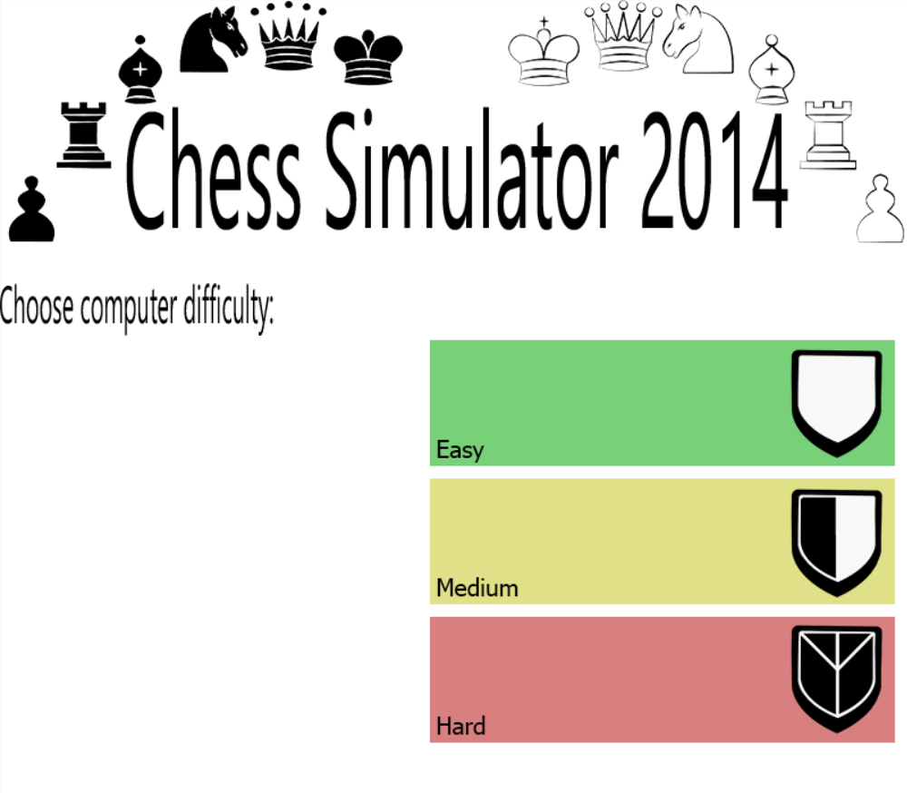
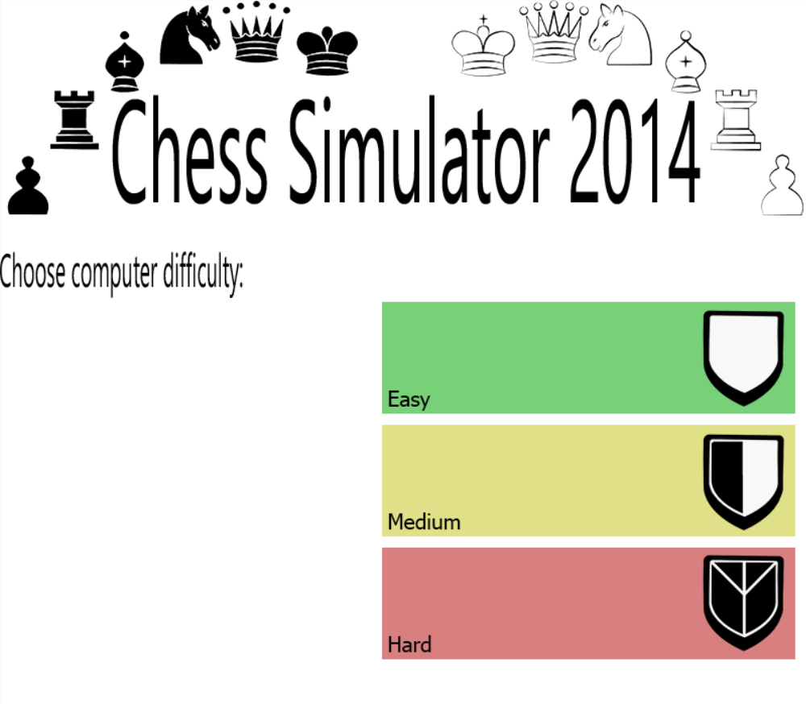

Portfolio
Chess Program
- A full chess program
- Written in C
- Team of 7
- Source on GitHub
Description and Responsibility
This project's goal was to design and implement a complete chess program with an AI opponent in 5 weeks. My role in the project was to design and implement a UI for the game. My primary goal was to create a user interface that required as little modification of the main game in order to function properly.
Design Process
Initially, I opted to create a text interface to quickly produce a workable output for my fellow team members to utilize while working on their own parts of the project. Once I had completed this task, I moved on to creating a graphical user interface. I opted to utilize the SDL 1.2 as per the suggestion of our professor. After spending some time reading the documentation and experimenting with SDL, I proceeded to implement the new GUI.
To ensure the error checking and movement systems my teammates implemented were utilized, early on I designed the code to grab input information from the user and pass it to the core program.
After deciding on a design for the UI, I began by implementing the GUI by drawing the chess board itself and aligning the chess pieces. Next, I spent some time working with the event system in SDL to capture mouse clicks from the user. Once I could capture the mouse clicks, I moved onto adding the logic for highlighting the places on the chess board the player selects (along with checks for illegal clicks on the board).
Once these core features were completed, I replaced the text-based UI with the graphical one for testing. Once I confirmed it was working as intended, I moved onto creating the menus throughout the program for game setup.
Screenshots

 



JLite Compiler
- A compiler for JLite
- Written in Java
- Team of 4
- Source on GitHub
Description and Responsibility
This project's goal was to create a compiler for a stripped down version of Java in 10 weeks. Ultimately the compiler would take the JLite code and compile it to valid C code, which could then be compiled into a runnable executable. While we initally did have seperate roles in the project, we eventually ended up assisting each other with their parts of the project.
Design Process
For the project, we were initially supplied with a parser for the compiler. We began by implementing a semantic check system into the program in order to ensure the input code was a valid JLite file. After finishing the semantic check system, we moved onto generating an Abstract Syntax Tree (AST) and building symbol tables for each method of the classes. From here, we were able to check for errors relating to the classes and methods.
Once we had tested and confirmed the AST was correctly generating and the error checks were working, we moved onto generating the Intermediate Representation (IR) from the AST. We used Three Address Code (essentially a generic assembly language) as our IR. Finally, from this IR, we were able to then generate the final C code.
Example
To be implemented
Home Alarm Project
- A RPi Home Alarm
- Written in C
- Team of 2
- Source on GitHub
Description and Responsibility
This project's goal was to create a home alarm system using a Raspberry Pi and our own custom circuit. The project called for reading data from a few analog sensors (thermistor and light dependent resister) and activating a buzzer when specific cutoff values were exceeded. Responsibility was not split and all development was done as a pair.
Design Process
To begin the project, we worked to read values directly from the ADC. Since the ADC used the SPI protocol, we first did some research into how to utilize it. Once we understood the protocol, we wrote a test program to read data from the ADC which was reading data from a potentiometer.
Once we verified that the interface between the ADC and the RPi was good, we moved to expand the code to support one sensor. We initially hard coded the cut-off value for the sensor to ease development. Once we confirmed that the first sensor was working, we added functionality for the system to automatically detect a cutoff depending on the current temperature it senses at start up.
After this initial system was working, we added in the second sensor and the buzzer to complete the full alarm.
Image Lab
- A set of DIP operations
- Written in C
- Solo
- Source on GitHub
Description and Responsibility
Excluding the first project, these projects aimed to apply a series of Digital Image Processing (DIP) operations to an input image of the Pixel Portable Map (PPM) format and output those operations to a new file (of the same PPM format). Each project built on the last and ultimately built to processing a video file. The videos were inputed as a YUV file and outputed in the same format.
In addition, both the image and video portions of the project had us generating a fractal structure and outputing it both as a single image and as an animated video.
Design Process
Due to these being much smaller projects and each one designed to build towards the next, the majority of my design decisions rested on properly researching the functions and finding a method of implementation.
Screenshots